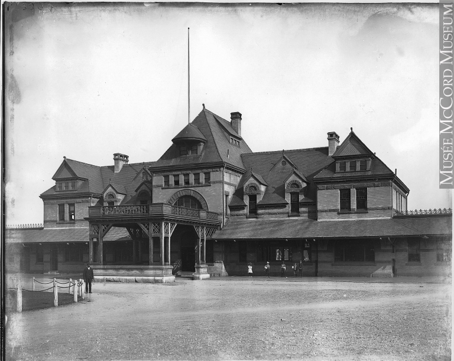
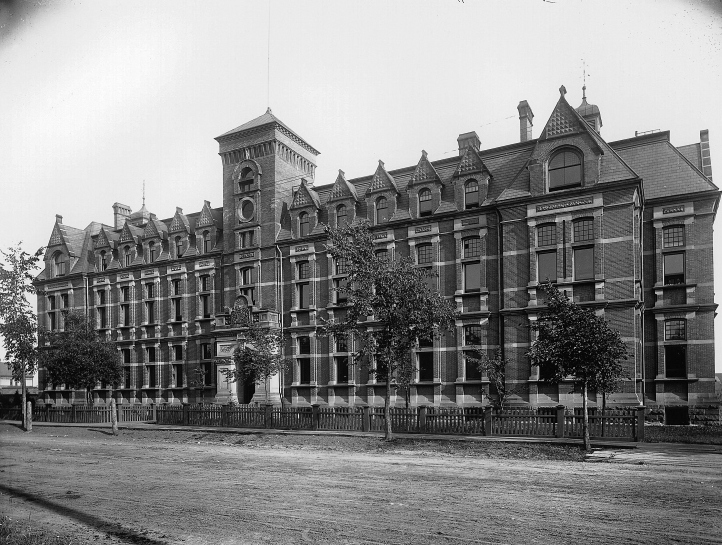
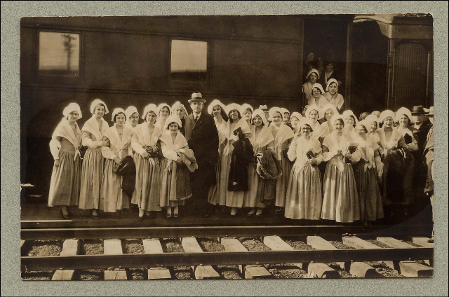
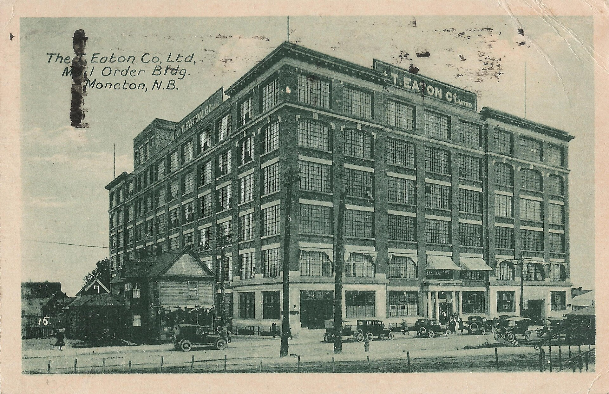
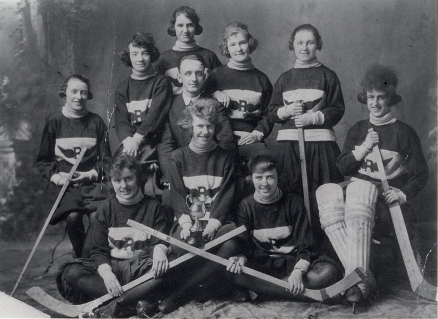
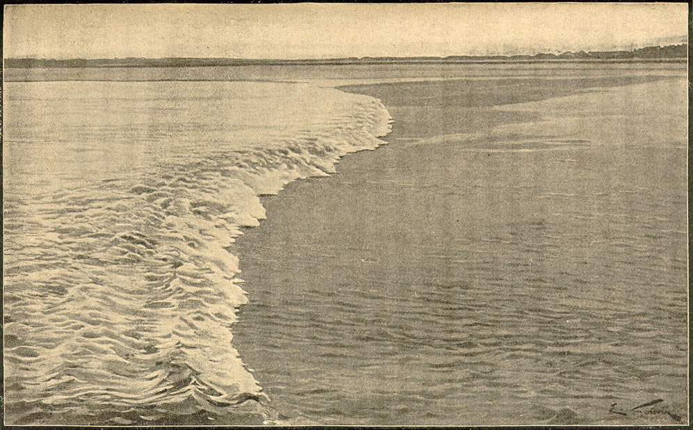
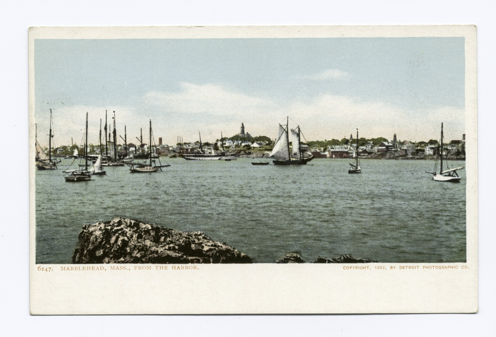
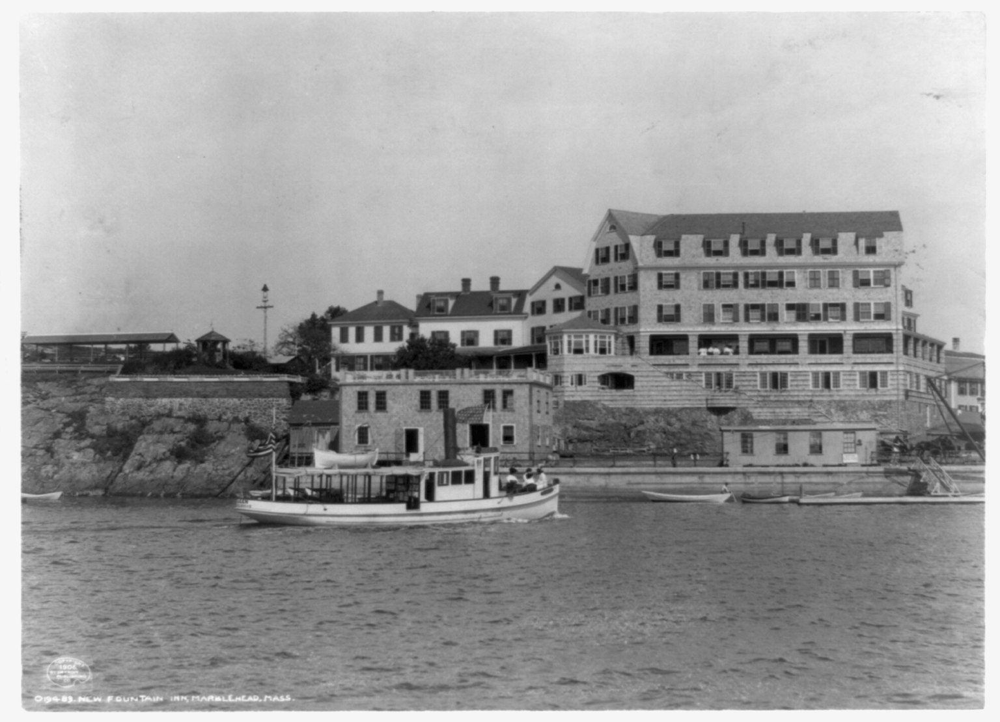
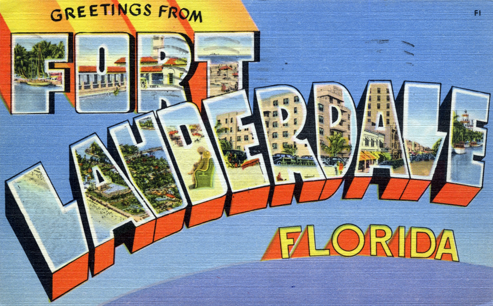

Al and Priscilla, and their children Joy, Marilyn, and Andy
Moncton · Spencer · Marblehead · Fort Lauderdale
Researched November 2026
This page follows Joy Henry, mother of Nicole and her sister Dawn, and Joy’s parents, sister, and brother. Every statement carries a label saying how firmly the records support it. Living people are named by first name only, and no private details are given. The history of Moncton, Marblehead, and Fort Lauderdale is context for the years the family is connected to those places. It is not a claim that a particular person did a particular thing there. Photographs are pictures of those places. None of them is a family portrait.
H
Henry
Palfrey
A title panel, not a portrait. No family photographs have been added yet.
01 — How to read this page
Confidence labels
Confirmed A public record states it directly.
Confirmed by family Shea, or the family through him, has stated it. It may not yet have a matching public record.
Likely Strong, consistent evidence, but no single record yet ties every part together.
Unverified A lead or a family memory not yet matched to a record, or searched for and not found.
Surname context Real, documented people who share the surname, place, and era. Not proved ancestors.
A city history under a place is context for that city and those years. A photograph is of the place, not of the family, unless the caption says otherwise. None of these captions do.
Nicole and her sister Dawn, daughters of JoyJoy’s parents: Alexander “Al” Henry and Priscilla Palfrey Henry Confirmed by familyAl is likely Alexander James Henry Sr., 1926–1994 LikelyPriscilla, November 28, 1928 – January 26, 2016 Confirmed by familyJoy’s sister and brother: Marilyn, and Andy, who is Alexander Henry Jr. Confirmed by familyOrigin: the Henry family came from Moncton, New Brunswick Confirmed by family. The year they left is Unknown
02 — Their children
Joy, Marilyn, and Andy
Joy has a sister, Marilyn, and a brother, Andy. Confirmed by family Marilyn is living. Her daughters are Mindy and Misty. Confirmed by family The family thinks Marilyn worked in banking. Likely No employment record was found for this page, and none is invented here.
Joy Henry
Joy works in banking. Confirmed by family An alumni listing titles her “Joy Winslow (Joy Henry),” Dillard High School, Fort Lauderdale, Class of 1973, and gives her occupation as banking. Confirmed as the wording of that listing. The listing is not a school transcript. It is a public alumni profile. The married name on it is the listing’s, and this page does not add anything about a spouse.
Andy, who is Alexander Henry Jr.
Alexander Henry Jr. is Andy, Joy’s brother, the son of Al and Priscilla. He ran a print shop. Confirmed by family Florida corporate records had already listed an officer named Alexander Jr. at Paradise Specialties, Inc., the Oakland Park company where a Priscilla P. Henry was also an officer. The family identification is what turns that “Alexander Jr.” from an open question into Andy.
03 — Their parents
Al and Priscilla (Palfrey) Henry
The family has confirmed that Joy’s parents were Al (Alexander) Henry and Priscilla Henry. Confirmed by family Priscilla did not remarry. Confirmed by family
Priscilla Palfrey Henry, 1928–2016
Confirmed by family that this is Grandma Henry. A Florida death index records Priscilla Palfrey Henry, born November 28, 1928, died January 26, 2016, in Tamarac, Broward County, Florida, at age 87, “formerly from Marblehead, Massachusetts.”
Maiden name: Palfrey. Likely It appears as her middle name in the death index, and the family now uses that name for her line. Palfrey is an old Salem and Marblehead surname. The family had remembered the name as Davis or Davie. A birth or marriage record would still settle the spelling at the source.
Where “formerly from Marblehead” stops: the death notice does not say she was born there. Birth in Marblehead is Unverified.
Fort Lauderdale: the family says she likely lived there. Likely Her death was in neighboring Tamarac.
Print shop: the family remembers that Priscilla and her son ran print shops. Andy’s shop is now Confirmed by family. Priscilla’s own role is still Likely. Florida corporate records list a Priscilla P. Henry as an officer of Paradise Specialties, Inc., filed in 1995 in Oakland Park, Broward County. A related company, Paradise Custom Screening & Embroidery, Inc., was a screen-printing and embroidery shop.
Her full obituary and her burial place have not been found. Not found
Alexander James Henry Sr., 1926–1994
Likely The family says Joy’s father was Al or Alexander Henry. The best match is Alexander James Henry Sr. The records of that man are clear on their own. Confirmed as records of this man, not yet as a proved father-and-children notice.
BornJune 5, 1926, Spencer, Worcester County, Massachusetts
ParentsRobert D. Henry and Viola Trites, named on his 1942 Social Security application
ServiceU.S. Navy, World War II, Electrician’s Mate 2nd Class (EM2)
DiedOctober 14, 1994, of Fort Lauderdale, Florida. The death index gives ZIP code 33311
BuriedLauderdale Memorial Park, Fort Lauderdale, Section 18, Row/Lot 23
Several things tie him to Priscilla and Joy. He lived and died in Fort Lauderdale, where the family lived. Public-records listings link Priscilla P. Henry of Tamarac with an Alexander J. / Alexander James Henry. The Paradise company lists an officer named Alexander Jr., and the family says that man is Andy. No marriage record, and no obituary naming his children, has been found yet. That is why the link from this Alexander James Henry Sr. to Joy is labeled likely rather than confirmed.
His Social Security number was issued in Massachusetts. If he is Al, he was born in the United States in 1926. That fact sits beside the family’s statement that the Henrys came from Moncton. It does not say which generation made the move, and it does not date it. See the Moncton section.
04 — A Canadian origin
Moncton, New Brunswick
The Henry family came from Moncton, New Brunswick, Canada. Confirmed by family The year they left, and which generation was the one that lived there, were not found. Unknown
What was searchedOpen-web indexes were searched in November 2026 for Robert D. Henry, Viola Trites, and Alexander Henry against Moncton, Westmorland County, the 1931 Census of Canada, and border-crossing records. No entry turned up that can be tied to this family. The manuscript census and the original Social Security application were not in hand, so this is a failed search of the free indexes, not a certificate that no such page exists. An Alice Viola Trites of Stilesville, near Moncton (1901–1932), appears in published Trites genealogies. She is a different person, and she is not claimed here.
If Al is Alexander James Henry Sr., his indexed Social Security record says he was born June 5, 1926, in Spencer, Worcester County, Massachusetts, son of Robert D. Henry and Viola Trites. Confirmed as the index of that man’s record. Likely that the man is Joy’s father. A Massachusetts birth in 1926 means that, if the identification is right, at least the birth happened in the United States. It does not mean the family had no Moncton years. It means those years, if they were his parents’ or his grandparents’, ended at an unknown date before or apart from that birth. Spencer itself is only the birthplace on that index. No record found here says how long anyone lived in Spencer, and no period photograph of Spencer was added.
The Trites name, as surname context
Surname context Viola’s maiden name, Trites, is a Moncton and Westmorland County name. The city’s own settlement story includes it. In 1766, Pennsylvania families settled at the bend of the Petitcodiac on the site of an earlier Acadian village, Le Coude. Among the eight families named in the standard account of that landing was Jacob Treitz, whose name became Trites. That is a real eighteenth-century settler. Nothing found makes him Viola’s ancestor. The Canadian Encyclopedia describes those 1766 settlers as being of German origin and says they called the place The Bend. The individual name is from the city’s historical narrative, not from a Henry record.
Everything under the next headings is the history of Moncton from about 1900 through the 1950s, the era to look at if the family was there in Al’s parents’ or grandparents’ time. It is city history. It is not a diary of the Henrys.
A railway town
Moncton stands on Mi’kmaq territory, at a bend of the Petitcodiac where a portage led toward Shediac Bay. The modern city is a railway city. After wooden shipbuilding collapsed, Moncton gave up its civic charter in 1862. It got a second start when it was chosen, in 1871, as headquarters for the Intercolonial Railway shops. The town reincorporated in 1875 with the motto Resurgo, “I rise again,” and became a city on April 23, 1890. The Intercolonial, opened through to Quebec in 1876, was the line Confederation had promised the Maritimes. Moncton was where its offices and its repair shops sat.
On February 24, 1906, the shops burned in the city’s largest fire. Henry Robert Emmerson, the local member of Parliament and the federal Minister of Railways and Canals, fought off proposals to rebuild them in Quebec or Nova Scotia. A new shop complex opened in 1908. The city’s historic-places register says that by the 1950s Canadian National and its shops employed 25 percent of Moncton’s working population. In 1918 the Intercolonial and the National Transcontinental were merged into Canadian National Railways. Moncton became headquarters for CN’s Maritime division, and the shops became CN’s main locomotive-repair plant for the region. The Canadian Encyclopedia says CN employed as many as 6,000 people at its peak, a figure that belongs to the years before diesel locomotives cut the work, not to the 1980s, when the shops finally closed.
The Census of Canada, as compiled in the city’s demographic tables, counted 9,026 people in Moncton in 1901, 11,345 in 1911, 17,488 in 1921, 20,689 in 1931, 22,763 in 1941, and 27,334 in 1951. The railway, and then the catalogue warehouse described below, is the straightforward reason a small headquarters town became a city of that size.

Intercolonial Railway station, Moncton, 1901. The city’s front door in the railway years. Not a Henry family picture.
William Notman & Son. Public domain. McCord Museum, via Wikimedia Commons. Date: 1901.

Intercolonial Railway general offices, Moncton, 1901, as catalogued by the McCord Museum.
William Notman & Son. Public domain. McCord Museum, via Wikimedia Commons. Date: 1901.
No openly licensed photograph of the repair shops themselves was found for this page. The 1906 fire and the 1908 reopening are taken from the city’s historic-places entry for the salvaged cornerstone, not from a picture of the shop floor.
English Moncton, Acadian Moncton
For a long time after 1766 the town at the Bend was an English-speaking place, while Acadian communities remained thick in the countryside to the east and north, at Memramcook, Shediac, and the surrounding parishes. Through the early twentieth century, Acadian workers moved into the city for railway jobs and other wage work. The Canadian Encyclopedia describes a strong Acadian presence as part of the city’s character and, for a much later census, reports that in 2016 about 32.5 percent of residents named French as their mother tongue. That 2016 figure is not a 1931 figure. It is here so the later city is not mistaken for the earlier one. Université de Moncton was founded in 1963, after the years this section covers.
A 1931 photograph does show an organized Acadian group in the city in the year of the census that was searched. The archival caption calls them Les Évangélines, an Acadian delegation at the Moncton station before a departure for Louisiana. They are not identified as Henrys or Trites. They are evidence of Acadian public life in Moncton in 1931, standing on the railway that ran the town.

Les Évangélines at the Moncton station, 1931, identified by the Centre d’études acadiennes as an Acadian delegation before a trip to Louisiana. Surname context for the city’s two communities, not a family portrait.
Reid Studio. Public domain. Centre d’études acadiennes, via Wikimedia Commons. Date: 1931.
Work in the Depression
The other large employer arrived because of the railway. The T. Eaton Company put its Atlantic catalogue warehouse in Moncton in the early 1920s. The Canadian Encyclopedia says it employed over five hundred people. A museum caption puts 844 people at Eaton’s Atlantic headquarters in Moncton in 1930. The building in the postcard below is that mail-order house. A postcard postmark of 1927 dates the view to the decade Al was born, wherever the Henry household actually was that year.
This page does not have a Moncton unemployment rate for the 1930s, and it will not invent one. The Depression reached the city as it reached the rest of Canada. What the sources do show is that wage work in Moncton, through the worst of those years and out the other side, still ran through the shops and through Eaton’s. By the 1950s the railway share of the workforce was the 25 percent already cited. Diesel locomotives, which needed fewer people to run and to repair, began the long decline after the Second World War. That decline is later than a 1920s emigration, and it is not evidence about when any Henry left.

T. Eaton Co. mail-order building, Moncton. The Commons file dates the postcard to a 1927 postmark.
Unknown photographer. Public domain. Wikimedia Commons. Date: postcard postmarked 1927.

Eaton’s Red Wings, a women’s hockey team in Moncton, 1918. Ordinary city life in the railway years, not a family team.
Unknown photographer. Public domain. Wikimedia Commons. Date: 1918.
The war, and the air training plan
During the Second World War Moncton was both a railway junction and an air-training town. In December 1939 Britain, Canada, Australia, and New Zealand agreed to the British Commonwealth Air Training Plan. The Moncton airfield, east of the city, became RCAF Station Moncton. No. 8 Service Flying Training School formed there on December 23, 1940, and trained pilots on Avro Anson and, later, Harvard aircraft. The school moved to Weyburn, Saskatchewan, on January 24, 1944, and disbanded that June. The Canadian Society for Civil Engineering’s historic-site record for the field also names No. 4 Repair Depot, No. 5 Supply Depot, No. 10 Release Centre, and No. 31 Induction Centre, the last of these handling recruits and the release centre holding graduates who were waiting for a convoy. A relief field was built at Scoudouc. The Canadian Encyclopedia adds that the Canadian Army built a supply base on the rail line near the shops, sorting matériel for Halifax, Saint John, and Sydney.
No openly licensed photograph of RCAF Station Moncton itself was found to download. A picture of an Anson taken at some other school would only pretend to be this place, so none is used. The airfield is now the Greater Moncton Roméo LeBlanc International Airport. Nothing in the Henry records read for this page says that anyone in the family worked at the station or at the shops.
Daily life, the hill, and the bore
Downtown, the Capitol Theatre’s 1922 interior, since restored, was the city’s picture house. The station, the Eaton’s building, and a hockey club are the other day-to-day pieces the openly licensed pictures happen to preserve. They are a railway town’s ordinary landmarks, not a map of one household.
Two landmarks drew people from outside. Magnetic Hill, a short stretch of road at the foot of Lutes Mountain, is an optical illusion: a car in neutral seems to roll uphill, because the land around it rises toward the mountain and the eye misreads the grade. Farmers had known the spot for years. It became a tourist place after the Saint John Telegraph-Journal published it in August 1933. Editor John Bruce and reporters Stuart Trueman and Jack Brayley drove up from Saint John, watched a car coast, and wrote that the whole countryside rises toward Lutes Mountain. Muriel Lutes, whose family lived on the mountain, was among the people they talked to, and she later sold ice cream at the hill. No openly licensed photograph from 1933 was found for this page. The hill is real. A Henry visit to it is not on record.
The Petitcodiac tidal bore is the other landmark. Twice a day the Bay of Fundy tide pushes a single wave up the river. Before the 1968 causeway between Moncton and Riverview, the Petitcodiac Watershed Alliance says the bore was among the largest in the world, on the order of two metres high and moving at about 13 kilometres an hour. The causeway is later than the years this section is about. The bore a resident would have watched between 1900 and the 1950s is the one in the 1902 photograph, not the smaller wave of the causeway decades. The Canadian Encyclopedia still lists the bore, and Magnetic Hill, among the things the city shows visitors. Watching either one is something people in Moncton could do. It is not something this page can assign to the Henry family.

The Petitcodiac tidal bore at Moncton, 1902, before the 1968 causeway. City context, not a family outing.
Signature illegible; from the Centre d’études acadiennes. Public domain. Wikimedia Commons. Date: 1902.
The moveThe family confirms a Moncton origin. No border-crossing record, census household, or obituary found in the free indexes dates the emigration, names the ship or the port, or says whether it was Robert, Viola, or an older generation who left. If the Spencer birth record belongs to Al, the United States already had that birth by June 5, 1926. The Canadian years, and the American years before Fort Lauderdale, stay partly blank on purpose.
05 — Priscilla’s Massachusetts
Marblehead
Confirmed as the place named in Priscilla’s death notice: “formerly from Marblehead, Massachusetts.” Unverified that she was born there, and unknown when she left. The notice gives her birth date, November 28, 1928, and does not give a birthplace.
Marblehead is a harbor town on a rocky neck north of Boston, settled by Europeans in 1629 and incorporated in 1649. A Massachusetts heritage survey describes two centuries of fishing, then a shoe industry that ended after fires in 1877 and 1888 destroyed most of the shops. By the late nineteenth century the harbor had made the town a yachting and racing port, second on the East Coast only to New York in that survey’s wording, with summer houses following the yacht clubs. The U.S. Census, as compiled for the town, counted 7,324 people in 1920, 8,668 in 1930, 10,856 in 1940, and 13,765 in 1950. If Priscilla spent a childhood there, that is the size of the town. The death notice does not say that she did.
The photographs are earlier than her birth. They show the harbor town as it already was in 1902 and 1906: a working waterfront and a summer port, not a 1930s street and not a family house. No openly licensed photograph of Marblehead from the 1920s or 1930s was found to put in their place.

“Marblehead, Mass., from the harbor.” Detroit Photographic Company, copyright 1902. Twenty-six years before Priscilla’s birth date. The town she was “formerly from,” not a picture of her.
Detroit Photographic Company. Public domain. New York Public Library, via Wikimedia Commons. Date: 1902.

New Fountain Inn, Marblehead, 1906. The print is captioned and dated on the photograph itself. A waterfront hotel, not a family address.
Library of Congress, Prints and Photographs Division, LCCN 89712214. Public domain. Date: 1906. Also on Wikimedia Commons.
06 — Broward County
Fort Lauderdale and Tamarac
Fort Lauderdale is the place the later records cluster, at different strengths.
Confirmed as the school city on Joy’s alumni listing: Dillard High School, Fort Lauderdale, Class of 1973. The school’s published address is in ZIP code 33311.
Likely as Al’s city, if he is Alexander James Henry Sr.: died October 14, 1994, of Fort Lauderdale, ZIP code 33311 on the Social Security death index, buried at Lauderdale Memorial Park in the city. The shared ZIP code fits the identification. It is not a street address.
Likely that Priscilla lived in Fort Lauderdale. Confirmed that she died in Tamarac on January 26, 2016. Confirmed by family that she did not remarry.
Likely for the Oakland Park print-shop companies, and Confirmed by family that Andy, Alexander Jr., ran a print shop.
The U.S. Census, as compiled for the city, counted 36,328 people in Fort Lauderdale in 1950, 83,648 in 1960, and 139,590 in 1970. The city roughly doubled, and then grew again, in the two decades before Joy’s class finished high school. Broward County as a whole went from 83,933 in 1950 to 333,946 in 1960. The postcard below is the city’s picture of itself around 1945, aimed at tourists: beach, hotels, canals. The 1960 photograph is Patricia Murphy in the garden of her Candlelight Restaurant in Fort Lauderdale, a real restaurant of that year, not a family place.
No openly licensed photograph of Dillard High School, of Tamarac, or of a Henry house was found. The alumni listing and the cemetery transcription do the locating. Lauderdale Memorial Park’s transcription reads: “Henry, Sr., Alexander J., 06-05-1926, 10-14-1994, Section 18, 23, EM2 US Navy WW II.”

Large-letter postcard of Fort Lauderdale, about 1945, printed for the Eli Witt Cigar and Tobacco Company by Tichnor Brothers. One copy is postmarked April 18, 1950. A tourist image of the city, not a family house.
Photograph of the postcard by Steve Shook, 2013. License: CC BY 2.0. Postcard date: circa 1945. Wikimedia Commons.
Patricia Murphy in the garden of her Candlelight Restaurant, Fort Lauderdale, 1960. A period picture of the city, not of the Henry family.
Unknown photographer. Public domain. Wikimedia Commons. Date: 1960.
07 — The Palfrey name
The Palfreys and the American Revolution
Surname context Priscilla’s Palfrey parents and grandparents have not yet been identified from records. Everything in this section is about documented Palfreys of the same area. None of them is proved to be her ancestor.
Old Planters of Salem
Peter Palfrey was among the first English settlers at Salem, Massachusetts. He was later called one of its “Four Old Planters.” He was made a freeman in 1631, was granted 200 acres in 1636, and died in Reading in 1663. Palfreys appear in Salem records through the 1700s, where the family was known for sailmaking. Palfreys were still in Salem and nearby Lynn in the 1800s.
Salem Palfreys at sea, 1776–1782
The state’s compilation Massachusetts Soldiers and Sailors of the Revolutionary War (volume 11) lists these Palfreys, under several spellings:
Name as written
Town
Service recorded
Warwick Palfrey (Palfray, Palfry)
Salem
Chosen Naval Officer for the port of Salem by the Massachusetts House in 1776, 1778, 1779, and 1780. Prize master on the state brigantine Massachusetts, 1777.
Thomas Palfrey (Palfray, Palfry)
Salem
Steward on the Tyrannicide, 1776–77. Master’s mate on the Massachusetts, 1777. Lieutenant on the privateers Phito (1777) and Hector (1779). Commander of the privateer brigantines Hope (1780) and Romulus (1782).
Hunlock Palfray
Salem
First lieutenant on the brigantine Dolphin and mate on the privateer Union, 1780.
Jonathan Palfray
Salem
Ship’s boy, age 14, on the privateer Union, 1780.
Locke Palfry
Salem
First lieutenant on the privateer sloop Grampus, 1778.
William Palfry
—
Private on the Penobscot Expedition, 1779.
Lt. Col. William Palfrey, Washington’s aide and Paymaster General
The best-known Revolutionary Palfrey was William Palfrey of Boston (1741–1780), the son of a sailmaker. He worked for John Hancock and wrote letters for the Boston Sons of Liberty. In 1775 he became aide-de-camp to General Charles Lee, and in March 1776 aide-de-camp to General George Washington. From April 1776 he was Paymaster General of the Continental Army, with the rank of lieutenant colonel, and he was with Washington at Trenton. Named consul to France in 1780, he sailed that December on the Shelala, which was never heard from again. He is a recognized DAR Patriot (A086446).
Not shown to be familyWilliam Palfrey’s documented line runs through Boston and Cambridge, not Marblehead. Nothing found ties Priscilla to him or to the Salem Palfreys above. Proving a line means finding Priscilla’s birth record, then her parents’ and grandparents’, one generation at a time, back to the 1700s.
08 — Still to learn
Open questions
Which generation of Henrys lived in Moncton, and when did they leave Canada? The family confirms the origin. No emigration date was found. If Al is Alexander James Henry Sr., that man was born in Spencer, Massachusetts, on June 5, 1926.
Where was Viola Trites born: New Brunswick, or Massachusetts? Where did Robert D. Henry come from? The Trites surname is Moncton context, not a proved line.
Who were Priscilla’s parents? A birth record for November 28, 1928, would name them. The death notice says she was formerly from Marblehead. It does not say she was born there.
When and where did Al and Priscilla marry? Massachusetts, around 1948–1955, is a reasonable place to look. The record would test the Palfrey maiden name and name both sets of parents.
Where is Priscilla buried? Is it beside Al at Lauderdale Memorial Park?
Family photographs, funeral cards, or Bible pages that could be added here, if the family wishes.
09 — Sources
Sources
Family statements, November 2026, marked “confirmed by family” in the text: the Henry family came from Moncton; Andy is Alexander Henry Jr., son of Al and Priscilla, and he ran a print shop; Joy works in banking; Marilyn is living, and her daughters are Mindy and Misty; Priscilla did not remarry. Marilyn’s banking work is labeled likely because that is how it was given.
Florida death-notice index, Priscilla Palfrey Henry (November 28, 1928 – January 26, 2016), Tamarac, formerly of Marblehead, Massachusetts.
Florida Division of Corporations (Sunbiz) officer records: Paradise Specialties, Inc. (P95000025435), and Paradise Custom Screening & Embroidery, Inc. (P98000003664), Oakland Park. Priscilla P. Henry and an Alexander Jr. appear as officers. The filing images were not re-opened for this revision; the officer names are those already indexed for this family.
Social Security records (NUMIDENT death record and 1942 SS-5 application) for Alexander J. Henry, birth June 5, 1926, in Spencer, Worcester County, Massachusetts, parents Robert D. Henry and Viola Trites, number issued in Massachusetts, death October 14, 1994, residence ZIP 33311, as indexed at sortedbyname.com (Henry) and Trites. The original application image was not viewed.
“Moncton,” The Canadian Encyclopedia (Guy Vincent, Sheva Medjuck, Sarah Ratchford; last edited July 18, 2019). Railway headquarters, Resurgo, CN employment up to about 6,000, the Capitol Theatre’s 1922 interior, Magnetic Hill, the tidal bore, Mi’kmaq territory, and the 2016 mother-tongue figures.
I.C.R. Monument, HistoricPlaces.ca. The shops burned February 24, 1906, reopened in 1908, and by the 1950s CN and the shops employed 25 percent of Moncton’s working population.
“History of Moncton.” The 1766 Pennsylvania settlers, including Jacob Treitz (Trites), and the early-twentieth-century movement of Acadian workers into an English-speaking city. The Trites settler is surname context only. The encyclopedia link above is the better source for the 1766 landing as a group; this page is the one that prints the family names.
Museum caption for Eaton’s employees at the Moncton catalogue building: 844 people in 1930 at the Atlantic headquarters. The Canadian Encyclopedia, cited above, says the warehouse employed over five hundred in the early 1920s.
BCATP Moncton Airfield, Canadian Society for Civil Engineering. No. 8 Service Flying Training School from December 1940, plus the repair, supply, release, and induction units named in the site record. Dates of the school, December 23, 1940, to the move to Weyburn on January 24, 1944, are as given at RCAF Station Moncton and the station’s historical summary.
Marblehead Reconnaissance Report, Massachusetts Department of Conservation and Recreation. Fishing, the shoe shops lost to the fires of 1877 and 1888, and the late-nineteenth-century yachting port. Census counts for 1920–1950 are the town series compiled at Marblehead, cited there from the U.S. census.
Fort Lauderdale census counts, 36,328 (1950), 83,648 (1960), and 139,590 (1970), as compiled at Fort Lauderdale from the U.S. decennial census. Broward County, 83,933 in 1950 and 333,946 in 1960, is in the same census volumes and is reprinted at this metropolitan table.
Massachusetts Soldiers and Sailors of the Revolutionary War, vol. 11, pp. 794–795 (Boston, 1903), Internet Archive.
Photographs, with file, license, and date, are credited under each picture. No family photograph is used. No image on this page was generated. No openly licensed period photograph was found of the Moncton shops, of RCAF Station Moncton, of Magnetic Hill in 1933, of Spencer, of Marblehead in the 1920s or 1930s, or of a Henry house.


.jpg){kind=link}